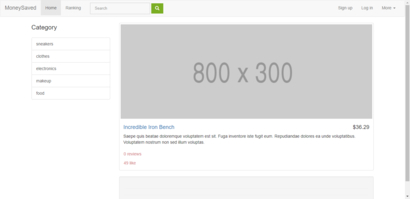
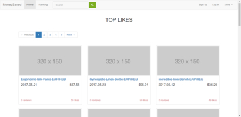

Project
Scalable Website Design & Development: Improving the Web Service Scalability
Built and improved a website which collects online coupon and discount information.
- Developed the website that has many sections based on Ruby on Rails.
- Deployed the website on Amazon EC2 and performed load testing using Tsung tool.
- Optimized the App by adding server-side cache and client-side cache.
- Achieved good performance with the website able to handle 32 new users per second and around 2,000 users in total under one second.


Dynamic Memory Allocator Design
- Designed a 64 bit dynamic memory allocator that supports malloc, free, realloc, calloc.
- Implemented malloc function using segregated doubly linked list as data structure, first-fit as searching policy, and optimized it by eliminating footer and using 16 bytes block as minimum block size.
- Improved average utilization up to 74.3% and achieved high throughput.
Intelligent Office System
- Built an office system based on ZigBee that could adjust the light intensity, detect people’s working hours and give warnings. (CC2530)
- Applied PWM dimming technology in codes to change light intensity automatically. (C, IAR IDE)
- Added a manual option to control light on the mobile phone and enhanced the comfort of the system. (Android)
- Achieved Second Prize for Nankai Projects.